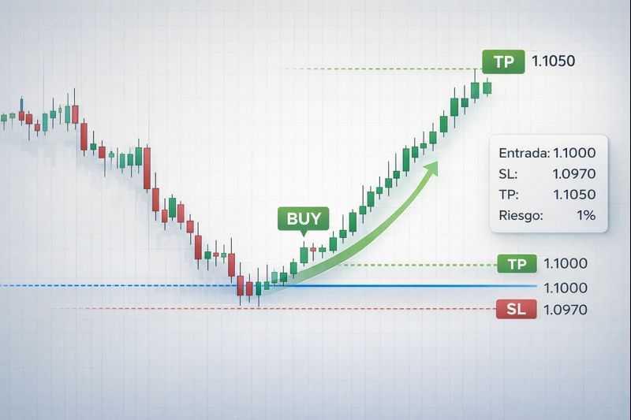
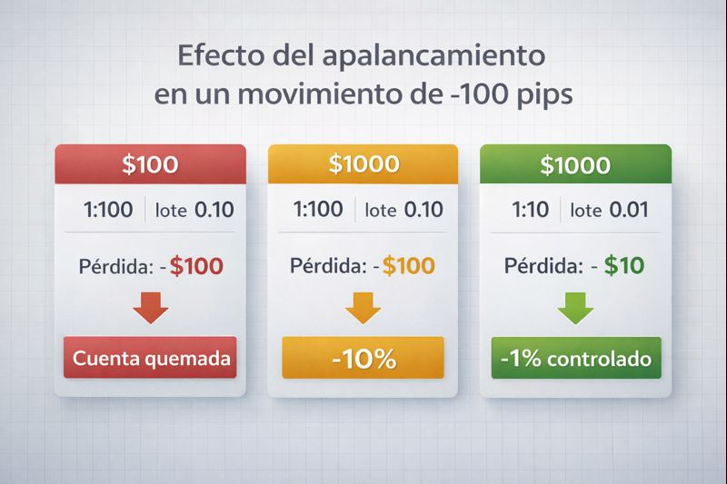

Aprende con Ejemplos Reales de Trading en Forex
Aquí desglosamos operaciones concretas para que veas cómo se aplican en la práctica los conceptos de lotaje, apalancamiento, Stop Loss (SL) y Take Profit (TP), y entiendas sus resultados.
Ejemplo 1: Operación BUY Exitosa en EUR/USD (Gestión de Riesgo Aplicada)
Contexto: Después de analizar el gráfico y ver una clara señal de soporte en el EUR/USD, decidimos entrar en una operación de compra, esperando un rebote. Calculamos nuestro riesgo basándonos en nuestra estrategia del 1% del capital.
 Ilustración de una operación BUY en EUR/USD con Stop Loss y Take Profit.- Par Operado: EUR/USD
- Tipo de Operación: BUY (Compra)
- Precio de Entrada: 1.1000
- Stop Loss (SL): 1.0970 (30 pips de riesgo)
- Take Profit (TP): 1.1050 (50 pips de ganancia potencial)
- Ratio Riesgo-Beneficio: 1:1.67 (Cada dólar arriesgado, buscamos ganar $1.67)
- Capital de la Cuenta: $1000 USD
- Riesgo Máximo por Operación: 1% de $1000 = $10 USD
- Tamaño de Lote Calculado: Para arriesgar $10 con un SL de 30 pips ($0.33 por pip), usamos un lote de 0.03 (Micro lote).
Ganancia: +50 pips * $0.30/pip (valor del 0.03 lote) = $15 USD.
Lección Clave: Una buena gestión del riesgo y un plan claro (entrada, SL, TP) te permiten obtener ganancias consistentes y proteger tu capital. El cálculo del tamaño de la posición es fundamental.
Ejemplo 2: Operación SELL en GBP/JPY (La Crueldad de No Usar SL)
Contexto: En este caso, entramos en una operación de venta en el GBP/JPY basándonos en un análisis débil o una corazonada. Lo peor de todo: por exceso de confianza o miedo a "salir en pérdidas", no colocamos un Stop Loss.
 Una operación SELL sin Stop Loss, con el mercado moviéndose en contra.
Una operación SELL sin Stop Loss, con el mercado moviéndose en contra.
- Par Operado: GBP/JPY
- Tipo de Operación: SELL (Venta)
- Precio de Entrada: 155.00
- Precio Actual (Movimiento en contra): 156.50
- Movimiento en contra: -150 pips
- Stop Loss: 🚫 ¡AUSENTE! 🚫
- Capital de la Cuenta: $500 USD
- Tamaño de Lote Utilizado: 0.20 (Mini lote - Demasiado grande para la cuenta sin SL)
Pérdida No Controlada: -150 pips * $2/pip (valor del 0.20 lote) = -$300 USD.
Esta pérdida es el 60% de la cuenta inicial de $500.
Lección Clave: No usar Stop Loss es la receta para quemar tu cuenta. El mercado no te esperará. Esta pérdida masiva no solo golpea el capital, sino también la moral. La gestión de riesgo es tu mejor amigo, incluso en operaciones perdedoras. Un SL hubiese limitado la pérdida a un porcentaje aceptable.
Ejemplo 3: El Poder y el Peligro del Apalancamiento
Contexto: El apalancamiento es una herramienta poderosa que permite controlar grandes volúmenes con poco capital. Sin embargo, su mal uso es una de las principales causas de la quiebra de cuentas. Veamos un ejemplo con un movimiento adverso de 100 pips.
 Comprendiendo cómo el apalancamiento afecta tus resultados.| Capital Inicial | Apalancamiento | Lote Usado | Valor por Pip (EUR/USD) | Movimiento de -100 Pips | Pérdida Monetaria | Impacto en la Cuenta |
|---|---|---|---|---|---|---|
| $100 | 1:100 (Alto para este capital) | 0.10 (Mini Lote) | ~$1.00 USD | -100 pips | -$100 USD | ¡Cuenta Quemada! (100% de Pérdida) |
| $1000 | 1:100 (Aún alto, pero menos agresivo) | 0.10 (Mini Lote) | ~$1.00 USD | -100 pips | -$100 USD | Pérdida del 10% del Capital |
| $1000 | 1:10 (Bajo/Moderado) | 0.01 (Micro Lote) | ~$0.10 USD | -100 pips | -$10 USD | Pérdida del 1% del Capital (¡Controlado!) |
¡Lleva la Teoría a la Práctica!
Ahora que viste los ejemplos, es tu turno de poner a prueba tus conocimientos. La mejor forma de aprender es haciendo.
Ver Más Contenido Educativo Descargar Herramientas de Trading Consultar el Glosario Pregúntanos tus dudas